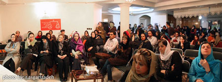
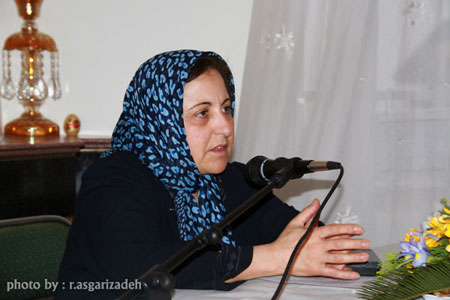
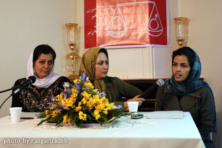
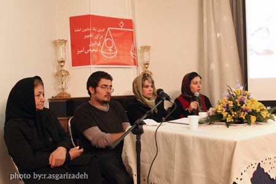
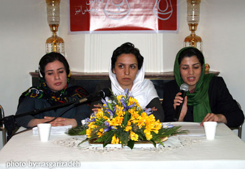
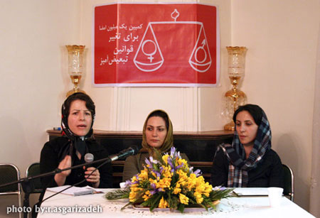
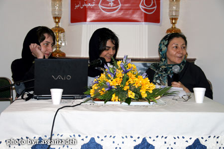
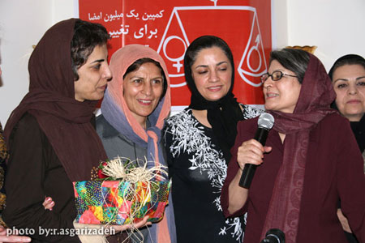
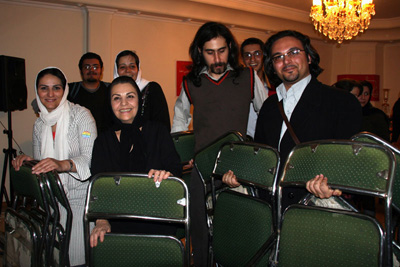

پذيرش > تریبون > گزارش كمپين > شیرین عبادی: مقاومت ما اثربخش است
 گزارش نشست اعضای کمپین یک میلیون امضا به مناسبت روز جهانی زن گزارش نشست اعضای کمپین یک میلیون امضا به مناسبت روز جهانی زن

 شیرین عبادی: مقاومت ما اثربخش است شیرین عبادی: مقاومت ما اثربخش است
26 اسفند 1386 - - نسخه قابل چاپ

بزرگداشت صدمين سالگرد هشتم مارس در آخرین پنجشنبه سال 1386توسط اعضاي كمپين يك ميليون امضا برگزار شد. این برنامه با سخنرانی شيرين عبادي و تقدير از پروين اردلان به خاطر دریافت جایزه معتبر بنیاد اولاف پالمه آغاز شد و سپس برنامه در قالب چهار پنل به فعالیت های کمپین و همچنین آسیب شناسی کمپین اختصاص داشت. در این برنامه که در منزل مسکونی یکی از مادران کمپین و مادران صلح برگزار شد فعالان كمپين يك ميليون امضا، فعالان حقوق زنان و حقوق بشر و برخي از فعالان مطبوعاتي حضور داشتند.

اين جنبش متوقف شدني نيست
شيرين عبادي، سخنان خود را با " تبریک مظلومانه" روز جهانی زن آغاز کرد:« زنان ايراني فعال در عرصه حقوق و مطالبات زنان حتي اجازه نداشتند با حضور در فضاهای عمومی شادي هايشان را با هم قسمت كنند. شما مظلوم هستيد براي اين كه هر صداي حق طلبي زن ايراني متهم به اقدام عليه امنيت ملي می شود. تبريك مي گويم به شما كه به رغم همه مشكلاتي كه براي تك تك تان ايجاد شد باز هم به اين راه ادامه مي دهيد.»
رئيس كانون مدافعان حقوق بشر با اشاره به مشكلات عديده و اتهامات واهي نظير اقدام عليه امنيت ملي به فعالان جنبش زنان و به ويژه اعضاي كمپين یک میلیون امضا گفت:« زماني گروه هاي چپ نماد زن را زني تصویر می کردند كه كودكي در آغوش دارد و تفنگي بر پشت حمل مي كند. اما حالا عصر مبارزات مسلحانه يا حمل تفنگ گذشته است. حالا زمان مبارزات مدني است. اين تفاوت ما با ساير جنبش هاست و به همين دليل اين جنبش مدني بسيار قوي در دل توده هاي مردم عميقا راه پيدا كرده و هر جا كه مي رويد صحبت از كمپين يك ميليون امضا و شجاعت و مبارزات زنان ايراني است»
عبادي در ادامه با ذكر اين نكته كه " مشكلات بوده و هست و خواهد بود اما مقاومت هاي ما اثر بخش است" ، گسترش فضاي ارعاب و تهديد فعالان اين عرصه را مورد اشاره قرار داد و با يادآوري موضوع زنداني شدن مريم حسين خواه و جلوه جواهري گفت: « ما از مشكلات نمي هراسيم. نمونه ي آن بازداشت (مريم و جلوه) بود كه انعكاس جهاني آن موجب شد در قطعنامه مجمع عمومي سازمان ملل متحد كه در دسامبر سال 2007 صادر شد و ايران را به علت نقض حقوق بشر محكوم كرد، براي اولين بار يك پاراگراف به حقوق زن اختصاص داده شود و به دولت ايران توصيه شود كه زنان را آزار ندهيد و حقوق آنها را بدهيد. »
شيرين عبادي سخنان خود را با تقدير از پروين اردلان عضو كمپين يك ميليون امضا و فعال جنبش زنان ادامه داد:« يكي از كساني كه خوشبختانه به درستي جايگاهش شناخته شد و مورد قدرداني قرار گرفت دوست عزيزمان خانم پروين اردلان است كه همه شاهد بوديم از اولين روزها چگونه خالصانه و صميمانه در خدمت اين جنبش بود و چگونه تمام وقت آزاد و زندگي و هستي و حتا سلامتي خود را در اين راه گذاشت و مورد تقدير يكي از مهمترين موسسات حقوق بشري دنيا قرار گرفتند . اما ديديم كه چطور با ايشان برخورد شد و در هواپيما مانع از رفتن ايشان شدند در حالي كه طبق مقررات قانوني بين المللي هواپيما و كشتي به منزله مرز و قلمرو كشوري است كه پرچم آن را دارد.پروين مي توانست پياده نشود و قانونا هيچ كاري نمي توانستند بكنند. مي توانست برود جايزه اش را بگيرد و همانجا هم مصاحبه كند و بگويد كه چگونه اقدامات خلاف قانون انجام مي دهند. اما از آنجا كه مبارزات زنان از جمله پروين مبارزه اي مدني است خودش از هواپیما پياده مي شود.»
عبادی با اشاره به روند اخیر ممنوع الخروج کردن فعالان زن از جمله منصوره شجاعی و نسرین ستوده با اشاره به نسرين ستوده که در جلسه حضور داشت گفت:«نسرين ستوده همان وكيلي است كه به خاطر دفاع از حقوق زنان در فرودگاه ممنوع الخروج اش مي كنند. من او را نماد زن مبارز ايراني مي دانم كه بچه به بغل در دادگاهها از حقوق زنان دفاع كرده است.»
نقد سياست روزنامه ها و ازجمله روزنامه های اصلاح طلب از گلايه هاي عبادي بود:"هيچ روزنامه اي حاضر نشد تبريك مرا به مناسبت جايزه پروين منتشر كند و حتي نتوانستيم سالني براي بزرگداشت او بگيريم. در چنين شرايطي از ما مي خواهند در انتخابات هم شركت كنيم؟"
عبادي در انتهابا ذكر اين نكته كه پروين اردلان همواره در عرصه ي نوشتن فعاليت كرده است يك قلم با به عنوان يادبود و تقدير به او تقديم كرد.
در ادامه سخنان عبادی، پروین اردلان ضمن اظهار اميدواري از اين كه مبارزات حق طلبانه و برابري خواهانه زنان تداوم بيابد و این مقاومت مدنی همچنان گسترش یابد به تلاش مستمر فعالاني همچون شيرين عبادي و نسرین ستوده اشاره كرد و گفت:« حضور چنين وکلایی در جنبش به ما نيرو و قوت و شجاعت مي دهد.»
مطالبات کمپین، عمومی شده اند
بخش دوم نشست با برپایی چند پنل و سخنرانی برخی اعضای کمپین یک میلیون امضا ادامه یافت.
در پانل اول انعكاس مطالبات زنان در عرصه عمومي را در حوزه هاي حقوقي، قانونگذاري و مطبوعات توسط زهره ارزني ، آمنه شيرافكن و محبوبه حسين زاده مورد نقد و بررسي قرار گرفت.

آمنه شیرافکن : مسائل زنان به طیف سنتی جامعه نیر راه یافته است
آمنه شيرافكن، روزنامه نگار به بررسي مصوبات مجلس هفتم در حوزه زنان پرداخت. وي گفت: «فراكسيون زنان مجلس هفتم پرچمدارتر نحله فكري اي هستند كه ما آن را تقريبا سنتي ترين ديدگاه در فضاي فكري جامعه مي دانيم. در چارچوب ساختار سياسي ما قدرت در طول سه سال اخير به دولت اصولگرا رسيده است و دولت اصولگرا هم ادبيات خاص خودش را دارد. اما همين كه همين دولت هم به مباحث مربوط به زنان مي پردازد، مي توان گفت به نوعي برايش صورت مساله ايجاد شده و اين خود جاي خوشحالي دارد.»
او افزود:« هرچند كارنامه فراكسيون زنان مجلس خيلي قوي نبوده است اما پيام مثبتي كه براي فعالان زن در ايران دارد، اين است كه در طيف سنتي سياسي حاكم بر جامعه زنان به شكل يك مساله در ابعاد سياسي، اجتماعي و حقوقي مطرح شده است. زماني دولت نهم شروع به كار كرد كه گروه هاي مختلف زنان متفق القول بودند كه بايد بر روي مطالبات حقوقي زنان كار كنند و وقتي اين مطالبات را مطرح كردند، مجلس هفتم هم در همان ابعاد سنتي خودش به آن پرداخت.»
« بحث لايحه صندوق بيمه زنان خانه دار ، جذب 30ميليارد تومان بودجه براي زنان سرپرست خانوار، پيش بيني 450ميليارد تومان از هزينه دولت براي سال آينده براي زنان سرپرست خانوار، افزايش حقوق زنان سرپرست خانوار، كاهش ساعات كاري زنان كه اين طرح به دليل مخالفت هاي مطرح شده با آن با اين استدلال كه بار مالي سنگيني بر دوش دولت دارد و باعث حذف زنان از عرصه هاي كاري مي شود فقط شامل حال زناني شد كه در خانواده آنها فرد معلولي هست، تابعيت مادري براي كودكان حاصل از ازدواج زنان ايراني با اتباع افغاني و عراقي البته بعد از سن 18سالگي، بازگرداندن بودجه خدماتي حمايتي زنان سرپرست خانوار به بهزيستي، اعتراض و نشست هاي مختلف به لايحه حمايت از خانواده» از جمله اقدامات مجلس هفتم در حوزه زنان است كه شیرافكن از آن نام برد.
او ادامه داد:« تمام مصوباتي كه در مجلس هفتم در مورد زنان مطرح شد متاسفانه زيرمجموعه همان ديدگاه سنتي موجود در دولت است كه زن را فقط در كنار خانواده تعريف مي كند و تمام مصوباتي كه در مجلس مطرح شد ناشي از اين نگاهي است كه ديدگاه اصولگرا به زنان دارد؛ يعني نگاهي كه همواره زنان را مادر قلمداد مي كند و نه صرفا يك زن.»
سخنران بعدي اين نشست، محبوبه حسين زاده، روزنامه نگار و عضو كمپين يك ميليون امضا بود كه به بازخواني اتفاقات يك سال اخير در حوزه زنان در مجلس، شهر و فضاهاي عمومي، دانشگاه ها پرداخت. وي اقدامات صورت گرفته در مجلس هفتم در حوزه برابري ديه و طرح مباحث مربوط به ارث را ناشي از همگاني شدن بحث مطالبات زنان دانست.
زهره ارزنی : جامعه حقوق زنان را مطالبه مي كند
زهره ارزني، وكيل دادگستري و از اعضاي كمپين يك ميليون امضا، از تاثير كمپين يك ميليون امضا برعمومي شدن مطالبات زنان گفت: در سالهاي گذشته بسياري از فعالان بر اين باور بودند كه مسائل حقوقي زنان تنها بايد از ديدگاه حقوقدانان مطرح شود اما كمپين اين باور را شكست و حالا همه دوستان عزيزان ما مي توانند در رابطه با قوانين نابرابر اظهار نظر كنند. ممكن است صحبت حقوقدانان فني باشد اما آنان هم با زبان ساده مي توانند مسائلي را مطرح كنند كه شايد بيش از صحبت هاي تكنيكي يك حقوقدان تاثير گذار باشد.»
او افزود:« كمپين با بردن اين مسائل به درون جامعه اقدامات موثري را در اين حوزه انجام داده است. برخي زنان اصولگرا كه هم اكنون در مورد ارث و قوانين نابرابر موضع گيري مي كنند در مجلس پنجم، نسبت به مقاله نوشته شده توسط خانم عبادي در مورد نابرابري ديه موضع گيري كردند و اين امر را استفاده ابزاري دانستند و يا وقتي شوراي نگهبان، كنوانسيون منع تبعيض عليه زنان را رد مي كند، با وجودي كه همه از اين موضوع ناراحت بوديم اما هيچ عكس العملي از سوي جامعه نمي بينيم. در حالي كه به محض اين كه لايحه حمايت از خانواده به مجلس مي رسد و حتي قبل از طرح در صحن علني مجلس، شاهد واكنش ها و عكس العمل هاي زيادي نسبت به آن هستيم.»

مریم حسین خواه: ايمان می آوریم که اين مبارزه ارزش اين هزينه ها را دارد
مريم حسين خواه، روزنامه نگار و از اعضاي كمپين يك ميليون امضا، در پانل دوم از تاثير متقابل فعالان زن بر زنان زنداني گفت:« اين ارتباط به نظر من رابطه اي دوسويه است؛ چيزي كه به نظرم با زنداني كردن مداوم فعالان زن اتفاق افتاده و خيلي مهم و برجسته است، شكسته شدن اين حس در زنان زنداني است كه نمي شود اعتراض كرد و زندگي همين است. در يك روز و نيمي كه در بازداشت 13اسفندماه، در بند عمومي اوين بوديم، فضاي ياس و نااميدي خيلي پررنگ بود و همه زنان زنداني توصيه مي كردند كه به زندگي مان برسيم. اما با 45روزي كه براي بار دوم در زندان اوين بودم، همين زنان ما را تشويق مي كردند و مي گفتند بعد از آزادي از زندان، براي كمپين امضا جمع خواهند كرد. من و جلوه هم بيانيه كمپين را روي كاغذ نوشتيم و به زنان زنداني داديم. وقتي كه نسيم و رها زنداني و از زندان آزاد شدند امضاهاي اين زنان را براي ما آورده بودند.»
وي افزود:« تاثير متقابل اين زنان بر ما اين بود كه وقتي در زندان با آنان كه از كودكي اسير نابرابري ها بوده اند، زندگي مي كنيم ايمان دوباره اي پيدا مي كنيم كه اين مبارزه ارزش اين هزينه ها را دارد. وقتي مجبوري در برابر بازجو از خود دفاع كني ديگر از تئوري های فمنيستي دفاع نمي كني بلكه از راحله اي دفاع مي كني كه به خاطر نداشتن طلاق، مجبور به شوهركشي مي شود و بعد هم اعدام مي شود.»
امير يعقوبلي: چرا مردان در کمپین؟
امير يعقوبلي، عضو كميته مردان كمپين ميليون امضا سخنران بعدي اين پنل بود كه از دشواري هاي حضور مردان در جنبش زنان و در كمپين يك ميليون امضا گفت:« من مي خواهم از اين زاويه به اين موضوع بپردازم كه چرا مردان فعاليت كمتري در كمپين دارند. اين موضوع را در قالب سه مشكل عمده بررسي مي كنم.
سوالي كه از بازجوي وزارت اطلاعات تا استاد دانشگاه از ما مي پرسند اين است كه چرا مردان در اين جنبش حضور دارند. اولين دشواري وقتي است كه با جامعه مواجه مي شويد. فرقي نمي كند از استاد دانشگاه تا بقال سر كوچه همين سوال را دارند كه تو كه مردي ! توبراي چه؟ بعضي اين موضوع را خيانت به مردان مي دانند و بعضي هم طور ديگري تفسير مي كنند؛ از انگ هاي زشت تا ساير موارد.»
او ادامه داد:« اين سوال وقتي وارد سيستم حاكميت و وزارت اطلاعات مي شود جالب تر مي شود. يكي به دليل جنبه عوامانه اي كه با خود همراه دارد چون همه مي دانيم كه حاكميت ما خيلي حاكميت نخبگان نيست و ديگري اين مساله است كه تقريبا تمام مرداني كه در جنبش زنان هم فعالند پيشينه فعاليت در ديگر جنبش ها، مثلا دانشجويي يا كارگري را داشته اند. اين موضوع، ترس حاكميت را دو چندان مي كند و اين مسأله مطرح مي شود كه اينها براي حقوق زنان نيامده اند، اينها آمده اند كه سوء استفاده كنند و يا اين جنبش را هم سياسي كنند و به همين دليل حضور مردان در اين حركت توجيه نشدني است. همين ديدگاههاي منفي باعث مي شود كه برخورد آنها با مردان فعال در اين عرصه برخورد شديدتري باشد.»
يعقوبلي افزود:« اما مشكل سوم بحثي است كه جنبش زناني ها از خودشان مي پرسند. مردها در اين جنبش چه مي كنند؟ اين سوال عجيبي نيست و من جوابي نمي دهم . اما اين سوال هست و وجود آن باعث مي شود كه ما هم ندانيم چطور رابطه مان را با جنبش زنان تنظيم كنيم. گاهي اوقات ما هم دچار اين اختلال مي شويم و اين به همان اندازه جدي است كه مشكل ما با حاكميت و جامعه جدي است. حضور ما به خاطر ژست روشنفكرانه گرفتن نيست به خاطر اين است كه منافع مردان هم در گرو ايجاد برابري است كه بايد بين ما ايجاد شود. پيروزي اين جنبش بدون حضور مردان ممكن نيست. بدون حضور مردان اگر حاكميت را هم به عقب برانيم جامعه همچنان در مقابل ايستاده است و مقاومت مي كند. چيزي كه كمپين را براي همه ما ارزشمند مي كند اين است كه كمپين توانست مردان بسياري را به اين حركت دعوت كند و حضور مردان دراين فعاليت ناشي از اين است كه مساله زنان مساله جامعه است. »
فخری نامی : کمپین نیرو بخش است
فخري نامي، عضو كميته مادران كمپين يك ميليون امضا به عنوان سخنران بعدي اين پنل گفت:« مادران وظايف خاصي را در خانه برعهده دارند كه كمتر مردي در دنيا مي تواند وظايف يك زن را انجام دهد. چرا كه برخي از قدرت ها و توانايي ها را زنان بيشتر دارند تا مردان. اما خود من چند سالي بود كه احساس ضعف و ناتواني مي كردم و فكر مي كردم كه جاي من ديگر در گوشه ي خانه است و خب بازنشسته هم شده بودم اما باايجاد اين كمپين، نيرو گرفتم و فكر كردم كه هنوز مي توانم در جامعه فعال موثر باشم.»
او ادامه داد:« با فعاليت در كمپين احساس مي كنم كه توانايي ام در بخش های دیگر هم بيشتر شده است . اين كمپين باعث شد مادران از خانه بيرون بيايند و علاوه بر آن حامي جوانان كمپن نيز باشند همان طور كه وقتي يكي از اعضاي كمپين دستگير مي شود براي آزادي وي با مقامات قضائي صحبت مي كنيم، علاوه بر اين كه هدف اصلي كمپين را نيز دنبال مي كنيم.»
آسیب شناسی اجتماعی سازماندهی کمپین
"سازمان دهی کمپین با رعایت شیوه های دمکراتیک" عنوان پانل بعدي بود كه در آن سميه رشيدي، نفيسه آزاد و نوشين كشاورزنيا در خصوص ساختار هاي وابسته به قدرت و عملكرد کنشگران کمپین یک میلیون امضا در قالب یک جنبش اجتماعی و همچنین چالش هایی که این حرکت در عمل از بیرون و درون با آن مواجه است، سخن گفتند.
نفیسه آزاد:لزوم شفاف سازی در کمپین
نفيسه آزاد، از اعضاي كمپين يك ميليون امضا گفت:« سابقه فعاليت هاي اجتماعي در ايران بيشتر باز مي گردد به فعاليت در سازمانهايي كه از دو جهت با جنبش هاي اجتماعي مدرن (كمپين يك ميليون امضا) متفاوت بوده اند. يكي اين كه اين سازمان هاي يا حركت هاي اجتماعي نگاه به قدرت داشته اند و ديگر اين كه اغلب ساختار هرمي داشته اند. بنا بر اين اغلب كساني هم كه به عنوان كنشگر جذب جنبش اجتماعي كمپين يك ميليون امضا مي شوند يا سابقه فعاليت در آن نوع فعاليت ها را داشته اند يا پيشينه ي ذهني شان در واقع به نوعي همان است. بنا بر اين حركتي مثل كمپين يك ميليون امضا براي اين كه هويت خود را بازتعريف كند چه از درون و چه از بيرون با مشكل مواجه است .»
وي ادامه داد:« درو اقع كمپین مي خواهد ساختار افقي داشته باشد و سهم خواهي از قدرت هم نداشته باشد. فقط مي خواهد اصلاحاتي در قوانين ايجاد شود. بنا بر اين جنبش هايي از اين دست از بيرون همواره با يك سري ساختار هاي هرمي از جمله بدنه حاكميت و بقيه گروهها مواجه هستند و از درون هم كساني كه به آن مي پيوندند ممكن است كه به خاطر تجربه هاي پيشين و فقدان تجربه كار در ساختار افقي تمايل داشته باشند كه ساختار را به سمت يك ساختار هرمي ببرند.»

آزاد افزود:« اين حركت در واقع براي اين كه بتواند خودش را مشخصا شفاف كند سه موضوع را بايد توضيح دهد. يكي سازماندهي منابع، ديگري قدرت و اقتدار دروني در اين سازمان ها و نحوه ي توزيع آن و ديگري تواتر تماس با بدنه اجتماعي است.»
سمیه رشیدی: حاشیه، بیشترین ضربه را به روابط همدلانه می زند
محور بحث سمیه رشیدی شبکه سازی در کمپین و آسیب شناسی كمپين از این منظر بود. او گفت:« هدف كمپين تغيير قوانين تبعيض آميز بود كه با جمع آوري و ارائه يك ميليون امضا قرار است به آن برسد، تنها شکل و شیوه تبدیل این هدف به خواسته همگانی، کارکرد شبکه ای است. كار شبكه اي ويژگيهاي خاصي دارد كه بايد باآن آشنا باشيم. اولا كه شبكه سيال و منعطف است و این قابليت را دارد كه خواست همگان را مطرح كند؛ ديگر ويژگي شبكه در حدود و ثغور و روابط آن است. در شبکه همه به صورت هرمي و رديفي قرار دارند و با قابلیت پخش موكراسي دراين شبكه كار مي كنند.»
رشیدی افزود:« در شرایطی که حتی ممکن بود فعالیت ما مورد حمایت خانواده هایمان قرار نگیرد، مادران شدند مادران کمپین و برادران ما شدند مردان کمپین. محل و سازمان ما هم منازل افراد شد. به همین دلیل رابطه اي شكل گرفت همدلانه. اما دموكراسي یا قابلیت پخش دموكراتيك در اين شبكه از همان ابتدا با یك نقص اساسي روبه رو بود. رسانه اي به عنوان رسانه ي چاپي نداشتيم كه شبكه ما را گسترش بدهد. باعث شود افراد بيايند و حرف هايشان را مطرح کنند و اطلاعات در اختیار مردم قرار گیرد. بنابراین اولين چيزي كه به دموكراسي ما مربوط بود همين رسانه بود که می توانست به گسترش شبكه هم كمك کند. رسانه ما اينترنتي شد و يك عده خود به خود حذف شدند.»
این عضو کمپین یک میلیون امضا ادامه داد:« كمپين ساختار خود را شكل داد و كميته ها شكل گرفتند. نکته مهم بحث من اينجاست چه كميته باشيم چه هسته خود بنياد، چه سازمانی در داخل كمپين و هر شكل ديگر، بايد يادمان باشد كه ما داخل شبكه هستيم. اين مهم است. متاسفانه آسيبی كه اين روابط همدلانه به ما زد این بود که وارد زندگی هم شدیم. ما از خانه هاي همديگر برای گسترش کار استفاده كرديم . اين شكل زنانه اش بود و ويژگي مثبت و عالي آن است. اما چيزي كه به همراه خود داشت، بحث حاشيه است. وقتی حاشيه وارد روابط همدلانه شود مي تواند بيشترين ضربه را وارد کند و این موضوع باید به دقت بررسی شود.»
نوشین کشاورزنیا:مقاومت دربرابر اعمال قدرت در کمپین
نوشین کشاورزنیا، دیگر عضو کمپین یک میلیون امضا در ادامه سخنان سمیه رشیدی به بررسی ساختار قدرت در کمپین پرداخت:«اصولا در حركاتي نظير كمپين یک میلیون امضا كه از جنس حركت هاي داوطلبانه مدني و فمينيستي است بايد نوعي از روابط قدرت جريان داشته باشد تا ما را به يك هدف جنبي و خيلي مهم يعني پي ريزي روابط دموكراتيك و يا همان دموكراسي خواهي برساند. سوالي كه اينجا مطرح مي شود اين است كه آيا روابط و يا در واقع ساختار قدرت در كمپين يك ميليون امضا به گونه اي هست كه باعث شود ما لااقل در اين مسير گام برداريم يا خیر.»
او توضیح داد:« در کمپین در برخي جاها اعمال قدرتي وجود داشته كه بر اساس برداشت کمی گرایانه و مردانه از قدرت صورت گرفته است؛ يعني اين كه افرادي با دسترسی بیشتری به يك سري از منابع (تاكيد مي كنم كه آن منابع هم بيشتر منابع اطلاعات هستند)، قدرت بيشتري داشتند و شايد ناخودآگاه در برخي از تصميم گيري ها اعمال نفوذ بيشتري كرده اند. اما در كنار اين مساله با يك نگاه ديگر به قدرت یعنی نوعی نگاه مبتنی بر نحوه توزیع قدرت و مفهوم مقاومت به مثابه قدرت مي بينيم كه در مجموعه کمپین، نقاط مقاومت را هم داشته ايم؛ يعني در برابر اين اعمال قدرت ايستادگي هم شده است. مي توان اين موارد را با مثال عینی عنوان كرد كه حالت انتزاعي به خود نگیرد.»
کشاورزنیا ادامه داد:« هشتم آذرماه سال جاري تعدادي از كنشگران كمپين كه افرادي بودند كه طبق تعريف های قديمي، فاقد قدرت بودند دورهم جمع شدند و سعي كردند آسيب شناسي از وضعیت موجود و برخی اتفاقات رخ داده در کمپین داشته باشند. من نظرم بر اين است كه اين دور هم جمع شدن و انتقاد همان مقاومت است و اين مقاومت از نوع مقاومت آماده مصالحه بوده نه مقاومت منفعت جويانه يا خشن و سازش ناپذير.»
این عضو کمپین یک میلیون امضا گفت:«يكي از مهمترين اين انتقادات اين بود كه چرخه اطلاعات در ميان اعضاي كمپين ناقص طي مي شود، به اين صورت كه يك عده به صورت مداوم در جريان اطلاعات قرار دارند و عده اي حتی در جريان اطلاعات مربوط به كميته ها و گروه كاري خود قرار نمي گيرند . اين موضوع از طرفي باعث كم شدن مشاركت اعضاي فعال در تصميم گيري ها مي شود و از طرف ديگر مانع توانمند سازي آنان مي شود و در كل كمپين آسیب پذیر می شود.»
وی افزود:« مهم اين است كه حتی اگر ما در يك گروه كوچك هم فعاليت مي كنيم بدانیم اولا روابط قدرت ما در آن گروه كوچك چطور است و بعد هم اين كه آيا واقعا اين گروه كوچك و گروههاي كوچكي كه قرار است تشكيل شود در يك شبكه با هم در ارتباط هستند یا خیر. در غير اين صورت آن گروه كوچك وارد يك ساختار ان جي اويي مي شود، كاري كه قبلا هم انجام مي شد و وقتي كه وارد آن كار بشويم چه بخواهيم و چه نخواهيم بايد متولي آن هم بشویم. و این در حالی است که همیشه گفته می شود کمپین متعلق به هیچکس نیست و به نظر من این جمله بسیار درستی است.»
زهره اسدپور:قربانی گروه گرایی نشویم
در پنل بعدي گزارشي از فعاليت شهرستان هاي كرج و رشت و عملكرد اعضاي كمپين در اين شهرستان ها ارائه شد.
سولماز از اعضای کمپین کرج، به نمایندگی از افراد شرکت کننده از این شهردر مراسم هشت مارس، به ارائه گزارشی از فعالیت های کمپین در این شهر پرداخت. اعضای کمپین در شهر کرج، علاوه بر جمع آوری امضا، کارگاه های مختلف توانمندسازی و تئوریک برگزار می کنند.

زهره اسدپور، از اعضای فعال کمپین رشت از ضرورت جلوگیری از گروه گرایی در کمپین گفت:« ما اعضای کمپین در شهرهای دیگر به دلیل ضعف ارتباطی موجود، از طریق سایت تغییر برای برابری متوجه خطوط و اختلاف هایی که در کمپین وجود دارد، می شویم. بحث ها و اختلافاتی که به نظر من بخشی از آن اساسی است و و البته با تاکید بر ضعف ارتباطی و دسترسی نداشتن به همه اطلاعات، معتقدم تمایزات ایجادشده بیشتر حاشیه است.»
وی افزود:« تمرکززدایی بحث بسیار خوبی است. ما با گرایشات مختلف فکری بر مجموعه ای از خواسته ها توافق کرده ایم و می خواهیم برای دستابی به این خواسته ها یا همان تغییر قانون تبعیض آمیز علیه زنان کار کنیم. اعتقاد من این است که هر فرد باید در کمپین با شناسنامه وارد شود، یعنی با گرایش فکری خودش، باید تریبون و رسانه خودش را داشته باشد و اعلام کند از چه موضعی با کمپین همکاری می کند چون بالاخره این کمپین تمام می شود اما ما در جنبش زنان می مانیم.»
اسدپور گفت:« در نشست شهرستانهای کمپین تاکید کردم ما باید با هم روابط دوستانه داشته باشیم اما الان مهم تر از روابط دوستانه، این است که این روابط قربانی سکتاریسم و گروه گرایی نشود.قرار نیست افراد به دلیل قرار گرفتن در گروه من، مورد حمایتم قرار گیرند. من به شدت نگران سکتاریسم و طیف گرایی در کمپین هستم. باید تاکید داشته باشیم بر تمرکز دایی، رعایت اخلاق دمکراتیک و پرهیز از تخریب یکدیگر.»
زهره اسدپور، سپس به ارائه گزارشی از برگزاری مراسم هشت مارس و ابتکار اراده شده از سوی اعضای کمپین رشت پرداخت. آنان بروشورهایی چندبرگی را در سطح وسیع به مناسبت هشت مارس چاپ کرده و با تبریک روز زن به زنان سطح شهر، این بروشورها را به زنان هدیه دادند تا هم با تاریخچه این روزجهانی آشنا شوند و هم با مطالبات حقوقی زنان ایرانی و کمپین یک میلیون امضا برای تغییر قانون تبعیض آمیز.
نقش هنر در عمومی کردن مطالبات
فیروزه مهاجر، تارا نجد احمدي و آزاده فرامرزی ها به عنوان سخنرانان پنل انتهايي با موضوع هنر روشي خلاق براي ارائه و عمومي كردن مطالبات زنان مجموعه سخنراني هاي اين نشست را به انتها بردند.

فیروزه مهاجر، استاد دانشگاه و از اعضای کمپین یک میلیون امضا، از ضرورت ثبت و مستندسازی اجراهای هنری و هنر خانگی و فمنیستی گفت و با اشاره به تاترهای اجرا شده توسط کمیته هنری کمپین گفت:« تجربه این دوره جنبش زنان نشان می دهد تا همه چیز ثبت و مستند نشود و تا به قدر کافی نقد و بررسی صورت نگیرد، ممکن است مسیر گم شود و تجربه ای منتقل نشود.»
موضوع صحبت آزاده فرامرزی ها و تارا نجد احمدی از اعضای کمیته هنری کمپین بر موضوع هنر اعتراضی متمرکز بود که به گفته آنان بخشی از پژوهش های این گروه را تشکیل داده است. ابتدا آزاده فرامرزی ها به بحث درباره شیوه های اعتراض به وسیله اشکال مختلف هنر و ایجاد ارتباط گسترده و چالش برانگیز با مخاطب پرداخت. این مبحث ابتدا با توضیح و تفسیر هنر (و به ویژه تئاتر) با مضامین اجتماعی آغاز شده و سپس تارا نجداحمدی نمونه هایی از اشکال مختلف نمایشها و یا حرکات نمایشی اعتراض آمیز در کشورهای مختلف را برشمرده و تصاویر آنها را نمایش داد؛ مانند آثار جنبشی و اعتراضی دادائیستها یا گروه تئاتر نان و عروسک و غیره.
در بخش بعدی آزاده فرامرزی ها به توصیف نمونه هایی از اعتراضات فمینیستها پرداخته و در آخر به لزوم استفاده از شیوه های مختلف بیان هنری و نمایشی اعتراضات گروهها و جنبشهای اجتماعی اشاره کرده و از کمبود این راهکارها در ایران اظهار تاسف كرد.

پایان بخش این برنامه تقدیر برخی از مادران کمپین و مادران صلح از پروین اردلان بود. خدیجه مقدم با اشاره به فعالیت های مریم فیروز که صبح همان روز، دار فانی را وداع گفته بود، گفت:« مریم فیروز یک زن کمپینی بود. همبستگی سه نسل از مادران است که کمپین را به پیش می برد. صحبت های مریم فیروز همیشه در گوش من زنگ می زند. او اولین اولین فمنیسیت خواسته محور بود. می گفت همین قدر که شما پرده های جهل را از روی چشم زنان کنار بگذارید آنان راه خود را پیدا می کنند.»
مقدم افزود:« این یک اتفاق خوب است که ما که فرزندان آن مریم فیروز هستیم امروز باید از دختر خودمان پروین تشکر کنیم که ما را در دنیا سربلند کرده است.»
در فواصل بخش هاي مختلف برنامه دو کلیپ ساخته شده توسط هنرمندان کمپین و کمیته هنری پخش شد.
متن کامل پژوهش کمیته هنری، سخنرانی نوشین کشاورزنیا، سمیه رشیدی، فیروزه مهاجر، محبوبه حسین زاده در روزهای آینده بر روی سایت قرار می گیرد.

پایان بخش برنامه تقدیر از میزبان نشست بود که صمیمانه به برگزاری این نشست یاری رساند و همچنین تقدیر ویژه اعضای کمپین از ناهید جعفری که تمام تلاش و توان خود را برای آن که این نشست بدون هیچ نقصی برگزار شود صرف کرد که همین جا نیز از او صمیمانه سپاسگزاریم. زنانی چون او از آن دست زنانی هستند که پشت صحنه کمپین فعالانه تلاش می کنند بی آن که درانتظار نامی باشند.
ارسال به
بالاترین
،
توییتر
،
فریندفید
،
فیسبوک
در همين بخش :
 دهمین دورۀ مراسم تندیس صدیقه دولت آبادی ۱۳۹۲ دهمین دورۀ مراسم تندیس صدیقه دولت آبادی ۱۳۹۲
کارت پستالهایی به بهانهی هشت مارس و به یاد همهی مبارزین راه برابری
بیانیه بیش از 350 تن از مدافعان حقوق زنان به مناسبت روز جهانی زن؛ زنان هر روز فرودستتر میشوند
لباسی که برای تن ما دوخته اند! /اعظم بهرامی
چالشها و چشمانداز فعالیت مدنی زنان
ديگر بخش ها :
طرح یک میلیون امضا
|
مقالات
|
سایت نوشته ها
|
اخبار
|
گزارش كمپين
|
گفت و گو
|
علیه سکوت
|
كوچه به كوچه
|
نامه های شما
|
گزارش ویژه
|
گفتگو با اعضا
|
ویژه سالگرد کمپین
|
تصویر برابری
|
دل آرام علی
|
تریبون
|
مقالات
|
تاریخ شفاهی
|
خارج از چارچوب
|
کتابخانه
|
درباره کمپین
|
کمپین در شهرها
|
کمپین در بند
|
صدای تغییر
|
ویژه 22 خرداد
|
لایحه حمایت از خانواده
|
گالری
|
عشا مومنی
|
امیر یعقوبعلی
|
خدیجه مقدم
|
راحله عسگری زاده و نسیم خسروی
|
پروین اردلان،جلوه جواهری، مریم حسین خواه، ناهید کشاورز
|
زینب پیغمبرزاده
|
سعیده امین، سارا ایمانیان، محبوبه حسین زاده، ناهید کشاورز و همایون نامی
|
احترام شادفر
|
نسیم سرابندی زاده،فاطمه دهدشتی
|
وبلاگ مهمان
|
پرونده خرم آباد
|
دستگیری ها
|
مریم مالک
|
پرستو اللهیاری
|
مهرنوش اعتمادی
|
سمیه رشیدی
|
Other Languages
|
همراهان
|
«فراخوان کمپین ده روز با بهاره هدایت»
| English
|